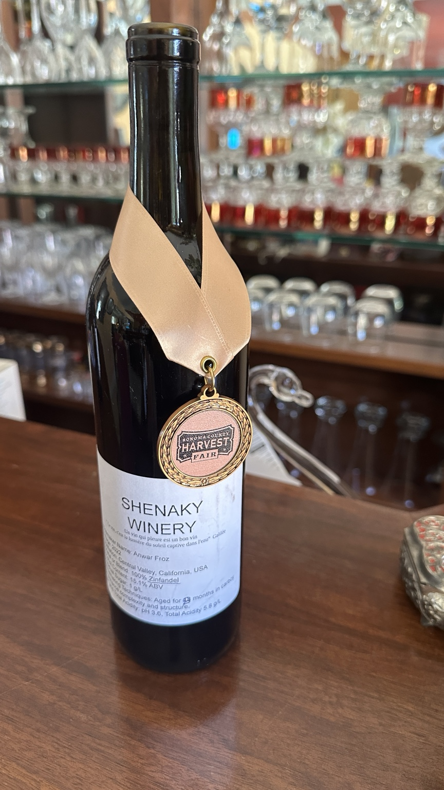

From Shenaky to California.
Shenaky Winery takes its name from Shenaky village in the Istalif region. Its spirit follows a personal journey through France and ultimately to California, where winemaking began in 2009.
Shenaky Winery takes its name from Shenaky village in the Istalif region. Its spirit follows a personal journey through France and ultimately to California, where winemaking began in 2009.
Every Shenaky wine begins with hand-harvested grapes. Each vintage is produced in limited quantities, with attention to balance, character, and the distinct expression of the fruit.
Every vintage of our Chardonnay begins in a vineyard in Alamo, California, where I personally care for the vines and hand-harvest the grapes.
All grapes used for Shenaky wines are hand-harvested. Other wines are made from carefully selected California fruit, depending on the character and promise of each vintage.
Un vin qui pleure est un bon vin.
